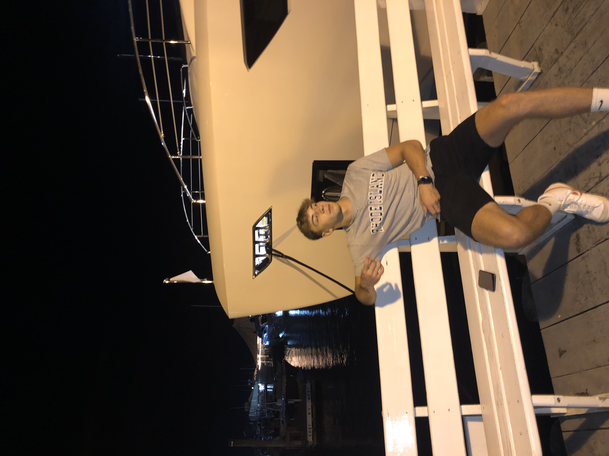

About Me
My name is Benjamin Coladarci and I am originally from Danbury, Connecticut. I attended Danbury High School and graduated in 2020. After high school, I attended The University of Connecticut and then transferred to The University of Rhode Island for my sophomore year. I am majoring in Computer Science and planning on minoring in cyber security.
When I am not in school, I can be found either working full time at Stew Leonard’s or on the baseball field. I have been playing baseball since I was 6 years old and currently aspire playing club baseball here. Sports have been a big part of my childhood growing up and they remain very important to me. I am a diehard New York Yankees and Las Vegas Raiders fan.
